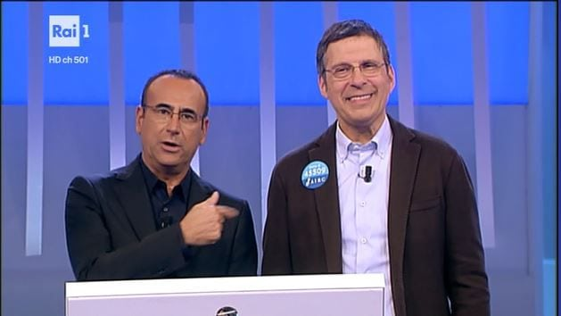

regolamento
- Abbinamenti
- La scalata doppia
- Vera o Falsa
- I Fantastici Quattro
- La Parola
- Il Triello
- A due passi dalla ghigliottina
- Ghigliottina
Al programma partecipano 7 concorrenti (6 concorrenti nuovi e il campione della puntata precedente). Il Campione occupa la posizione numero 1 e gli altri 6 concorrenti sono collocati in senso orario.
Abbinamenti
A ogni concorrente viene assegnato un "pacchetto" composto da 10 abbinamenti di argomento diverso. Il concorrente ha 20 secondi di tempo per completare correttamente l'abbinamento. Per esempio, può essere chiesto di completare l'abbinamento fornendo il nome di un personaggio famoso una volta dato il cognome, oppure fornendo il risultato di una somma o sottrazione. Se il concorrente non completa l'abbinamento nei 20 secondi a disposizione allora commette un "errore", e il gioco passa al concorrente successivo. Il gioco termina quando un concorrente commette due errori, e quindi è costretto a partecipare al gioco "La scalata doppia" con un altro concorrente a sua scelta.
La scalata doppia
Partecipano il "Puntatore" (colui che ha commesso due errori nel gioco precedente) e il "Puntato" (il concorrente scelto). A turno i concorrenti devono dire la parola di cui viene data la definizione, e ogni volta che un concorrente risponde correttamente il turno passa all'altro. Ogni concorrente ha a disposizione 60 secondi, e ogni 3 secondi viene mostrata al concorrente una nuova lettera che forma la parola da indovinare. Il timer si interrompe soltanto quando il concorrente risponde correttamente. Il concorrente che fa scadere il proprio timer di 60 secondi viene definitivamente eliminato dal programma.
Vera o Falsa
Il conduttore propone a ogni concorrente una affermazione. Il concorrente deve dire se quella affermazione è vera oppure falsa. Se il concorrente risponde correttamente il gioco passa al concorrente successivo, mentre se risponde in modo errato commette un errore e il gioco passa al concorrente successivo. Il gioco termina quando un concorrente commette due errori, e deve quindi partecipare a "La scalata doppia" con un concorrente a sua scelta.
I Fantastici Quattro
Il conduttore presenta ai concorrenti un avvenimento storico, e a turno ogni concorrente deve dire l'anno (tra 4 anni come opzioni) in cui è avvenuto. Se il concorrente risponde correttamente il gioco passa al concorrente successivo, mentre se risponde in modo errato commette un errore e al concorrente successivo viene proposta la stessa domanda. Il gioco termina quando uno dei concorrenti commette due errori, e quindi deve partecipare a "La scalata doppia" con un concorrente a sua scelta.
La parola
Ai concorrenti viene presentata una parola "difficile" (di uso non comune) e a turno ogni concorrente deve indovinare la definizione giusta tra quelle parole. Il primo concorrente che sceglie la definizione giusta accede direttamente al triello. Il gioco passa ai tre concorrenti rimasti, ai quali viene di nuovo mostrata una parola "difficile". Il primo concorrente che individua la corretta definizione della parola proposta accede direttamente al triello. I due concorrenti rimanenti si sfidano a "La scalata doppia" per ottenere l'ultimo accesso al Triello. Il concorrente che perde la sfida viene definitivamente eliminato dal programma.
Triello
Al "Triello" partecipano 3 concorrenti. All'inizio del gioco vengono mostrate 7 caselle contenenti domande di argomento diverso. Il primo a scegliere l'argomento della domanda è il concorrente col montepremi più basso. Ogni volta che viene scelto l'argomento vengono mostrate la domanda e le 4 opzioni di risposta. Se il concorrente risponde correttamente fa aumentare il proprio montepremi del valore della domanda (che può valere 10000, 20000, 30000 oppure 40000 euro), e sceglie e risponde per primo alla domanda successiva, mentre se risponde in modo errato la stessa domanda viene posta al concorrente successivo. Il gioco termina quando vengono scelte tutte e 7 le domande.
A due passi dalla ghigliottina
Al concorrente col montepremi più alto dopo il Triello viene presentata una domanda dal conduttore. In caso di risposta corretta viene proposta un'altra domanda e, in caso di risposta corretta il concorrente passa direttamente alla ghigliottina col proprio montepremi. Nel caso in cui il concorrente non risponda correttamente a una delle due domande il gioco passa al concorrente successivo (al montepremi del quale è stato sommato quello del concorrente precedente): se il concorrente risponde correttamente ottiene il diritto di rispondere alla domanda successiva. Il gioco si conclude quando uno dei concorrenti risponde correttamente a due domande, accedendo così alla "Ghigliottina" col montepremi accumulato.
Ghigliottina
Il vincitore del gioco "I calci di rigore" partecipa alla "Ghigliottina" in qualità di "Campione" o "Campionessa" con il montepremi accumulato nei giochi precedenti. Vengono proposte 5 coppie diverse di termini, e per ogni coppia il concorrente deve scegliere, in modo casuale o tramite un ragionamento, il termine "corretto". Se il termine scelto è quello corretto diventa un indizio, col quale il concorrente può indovinare il "termine nascosto". Se il termine scelto non è quello corretto allora il montepremi viene dimezzato e viene mostrato al concorrente il termine corretto. Ottenuti i 5 indizi, il concorrente ha a disposizione 60 secondi per indovinare la parola giusta che accomuni tutti e 5 gli indizi. Se la parola scritta dal concorrente è il "termine nascosto" allora il concorrente vince il proprio montepremi e ha il diritto di partecipare alla puntata successiva, altrimenti perde il montepremi, ma ha comunque diritto a partecipare alla puntata successiva in qualità di "Campione" o "Campionessa".
